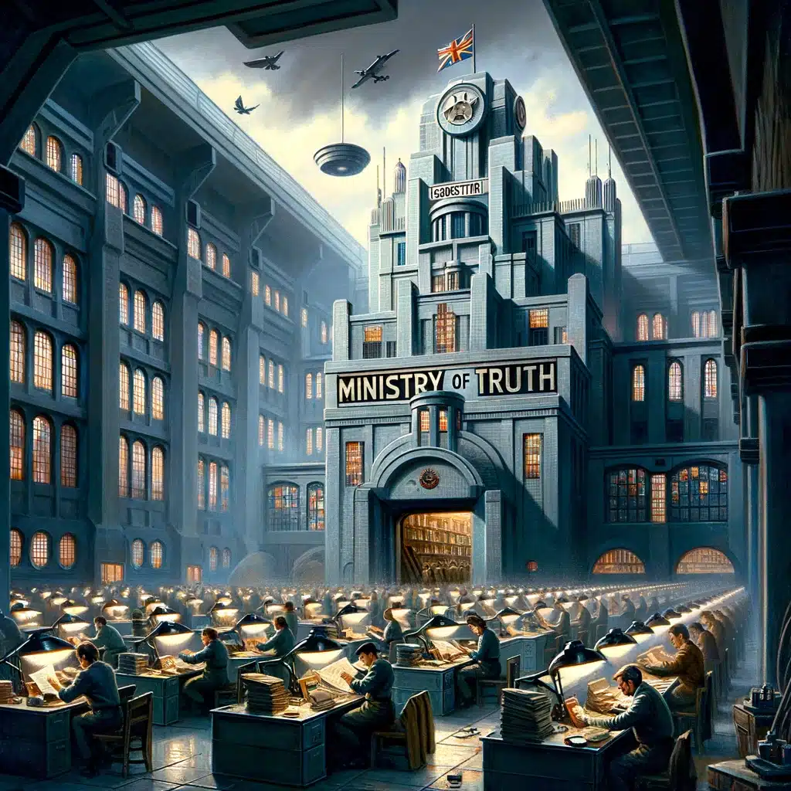

Theme 3 of 5
Manipulation of Truth
How do governments lie to their populations like the Party does in 1984?
In The Book
What Happens In 1984
- The Ministry of Truth actively alters historical documents to make past what they want it to be
- The Party will create "unpersons", people who they erase completely from history
- The people participate in Doublethink, a practice where you have to believe two contradicting beliefs as true to ensure you believe the Party's truth
Quote
“And if all others accepted the lie which the Party imposed— if all records told the same tale—then the lie passed into history and became truth. 'Who controls the past,' ran the Party slogan, 'controls the future: who controls the present controls the past.' And yet the past, though of its nature alterable, never had been altered.”
(pg 34)
Real Life
Modern Example
- North Korea completely restricts access to the internet and free information
- Their own version of history is taught to its people
- People who act against the party are often killed and are erased from any public records